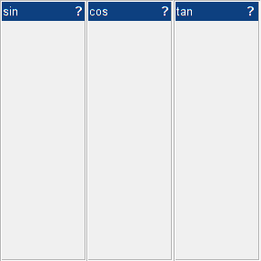

4.1: Context help 
When a uix.BoxPanel has its HelpFcn
filled in, a help button (?) is shown in the upper-right of the
title-bar. When the user clicks this button the specified function
is called.
For example:
Here we hookup the HelpFcn to simply bring up
the MATLAB documentation for each command. Clicking any of the "?" buttons
will cause the MATLAB help browser to open.
f = figure( 'Name', 'uix.BoxPanel Help Example' );
b = uix.HBox( 'Parent', f );
uix.BoxPanel( 'Parent', b, 'Title', 'sin', 'HelpFcn', @(a,b) doc('sin') );
uix.BoxPanel( 'Parent', b, 'Title', 'cos', 'HelpFcn', @(a,b) doc('cos') );
uix.BoxPanel( 'Parent', b, 'Title', 'tan', 'HelpFcn', @(a,b) doc('tan') );

© 2023 The MathWorks Ltd
• Terms of Use
• Patents
• Trademarks